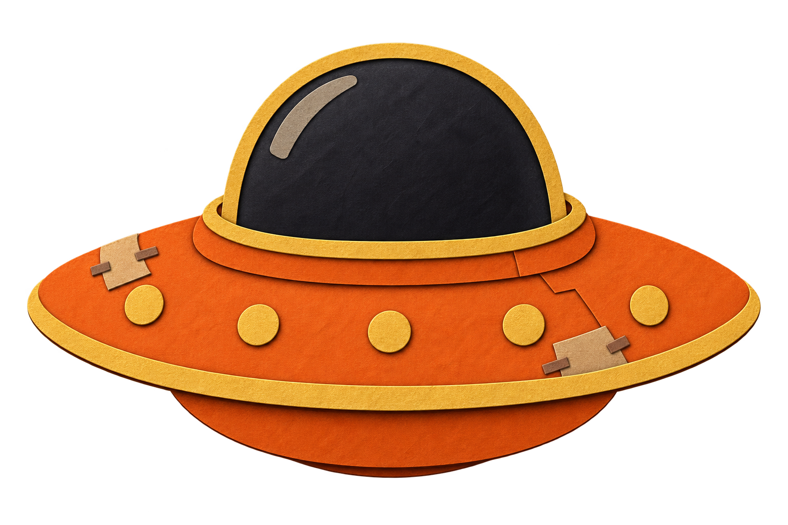
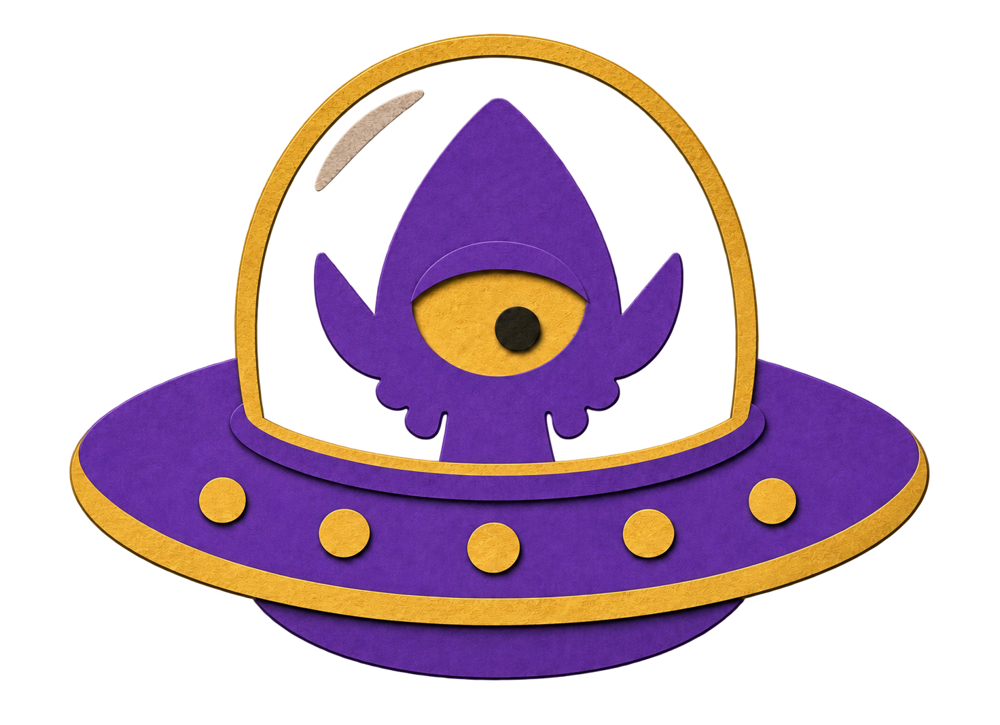

EMPLOYEE ESCAPE PROGRAM / OPEN DEPARTURES
Mom is lying.
You are leaving.
The truth is stranger than the briefing.
Give rare answers. Read the evidence. Get out.
MOM’S MISINFORMATION MACHINE SPACE ESCAPE TRIVIA
ESCAPE VECTORLAYER 01 / 08
MOTHER SOLAR STATION 100,000 KM
- 87,500Station approach
- 75,000Deep-space static
- 62,500Outer-system files
- 50,000The red channel
- 37,500Lunar interference
- 25,000Satellite belt
- 12,500Low orbit
- 0 KMCompany grounds

YOU
MOM INC.MOM IS ON YOUR TRAIL
Company grounds0 KM
DISTANCE0 km
SIGNAL SCORE0
HULL● ● ●
THE EXIT PROCEDUREUncommon knowledge.
Uncommon knowledge.
Very common danger.
- Name something that fits.You have 25 seconds. Rarer valid answers earn 10–100 points.
- Read the exact statement.Is it documented, or an unsupported conspiracy claim? A wrong call damages your hull.
- Reach the station.Every accepted answer must be top-tier to dock. Three hits end the run. Restart as often as you like.
Eight layers of transmissions unlock as you climb. Your current and previous layers keep sending questions for unlimited flights. Answer rarity is editorial and specific to each transmission; it is not measured from other players. The archive is curated and growing.
Includes non-graphic references to historical atrocities, disasters, abuse, and serial murder. Scores reward recall, never harm. Grade the exact statement: a real investigation does not prove every theory about it. Unresolved propositions are excluded from binary grading.
EVIDENCE, NOT VIBES